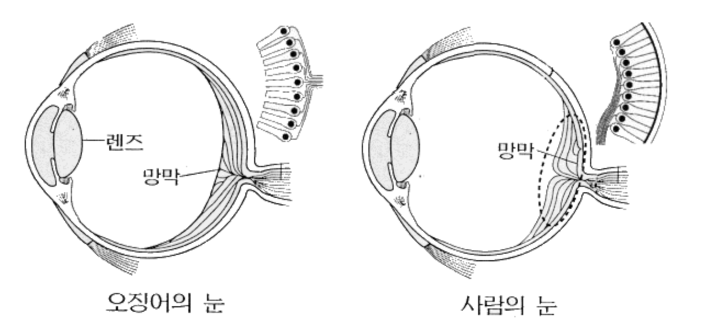
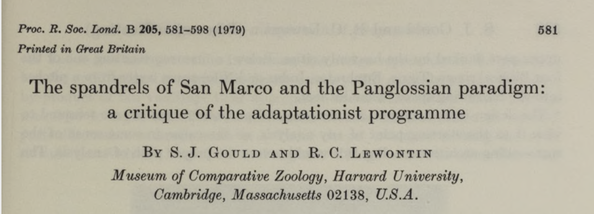
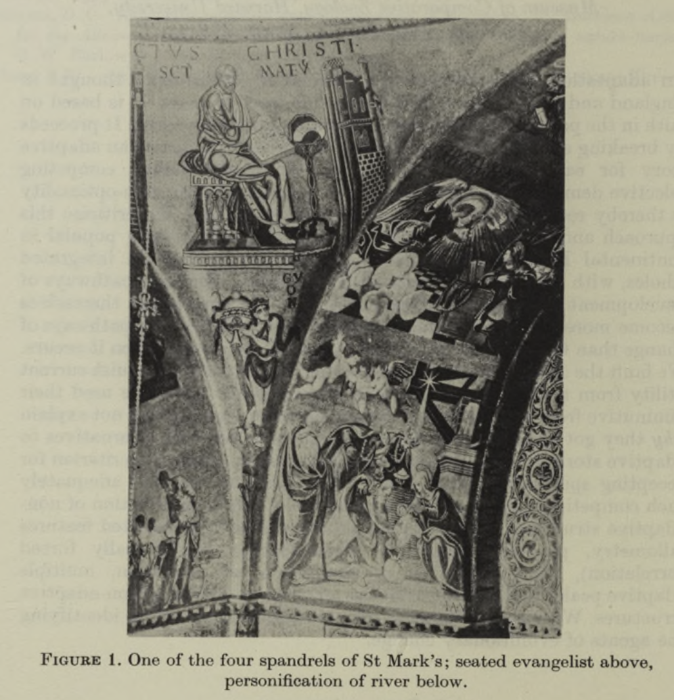

L5. 서비스의 적응성(1)
적응 개념과 서비스에서의 적응
Minseop Lee(Programs in Cognitive Science, SNU)
2022-10-04(Tue)
키워드로 보는 전반부 강의요약
- L1 : ‘공간’
- L2 : ‘성공’
- L3 : ‘모듈’
- L4 : ‘팀’
- 서비스를 기획하기에 앞서 점검해야 할 내용들
후반부 강의소개
- 서비스 기획과 사용자 조사에 필요한 개념들 소개
- L5 : 적응
- L6 : 근본 동기
- L7 : 편향(인지, 내용, 맥락(모델, 순응))
- L8 : 네트워크
강의목표
- 적응의 개념을 이해한다.
- 서비스에서 적응의 사례들을 확인한다.
다시 UX와 서비스 기획에 초점
- 눈에 보이는 부분을 어떻게 만들까?
- 기능적인 측면을 어떻게 만들까?
사용자 조사 -> 서비스 기획의 간극
- 여러가지 조사방법론을 배우고는 있으나 의사결정으로 조사의 결과들이 이어지는 것은 또 어려운 문제
- 어떤 지표를 중요하게 여겨야할지 정해야함.
- 각 지표에 대해서 어느 수준이 🟢 인지를 자체적으로 정해야함.
야구의 작전
- 타구 낙하지점 자료를 기반으로 한 내야 시프트 작전
- 투수에 따른 대타 작전
- 성공률이 얼마나 될까?
- 작전이 실패하더라도 작전은 계속 내야 한다.(결과론의 두려움을 극복하자.)
지표 선택
- 정성 지표
- 해당 기능은 꼭 필요한가?
- 왜 필요한가?
- 어떻게 구현할 것인가?
- 해당 기능을 가져갈 때(채택할 때) 따라오는 결과들은 무엇이 있을까?
- 그러한 결과들을 어떻게 해결할 것인가?
- 해당 기능은 꼭 필요한가?
- 정량 지표
- 얼마나 많은 사람이 관심을 보였는가?
- 얼마나 많은 사람이 선호했는가?
- …
적응 논의가 적용되는 부분
- 해당 기능이 꼭 필요한지 고민한 뒤
- 해당 기능을 가져갈 때 따라오는 결과들이 무엇인지 생각해볼때
- 적응 논의가 도움이 됨.
적응이란 무엇인가?
테오도시우스 도브잔스키는 적응을 다음과 같이 정의하였다.
- 적응은 생물이 서식지에서 보다 잘 살 수 있도록 하는 진화의 과정이다.
- 적응도는 생물이 주어진 서식지에 얼마나 적합하게 진화되었는지를 나타내는 것으로 생물의 생존 정도와 재생산 정도로 나타낼 수 있다.
- 적응형질은 생물이 생존하고 재생산하는데 유리한 방향으로 진행된 유전형질의 발현 특징이다.
적응이란 무엇인가?
적응은 자연 선택에 의한 진화의 1차적 산물 (Alcock, 2009; Dawkins 1982; Dennett, 1995; Gould, 1997; Triverse, 1985; Williams, 1992)
- 자연선택에 의한 산물은 적응만 있는 것은 아니다.
- 적응, 부산물, 임의 효과, 굴절적응
적응 : 진화적 적응환경
- 눈의 진화 : 수억년에 걸친 가시광선 환경
- 이족 보행의 진화 : 440만년 전의 진화적 환경
부산물
- 적응문제를 해결하지도 못하고, 기능적 설계도 갖지 않은 특성
- 기능적 설계를 가진 특성과 함께 ’전달’되는데 우연히 그러한 적응과 짝을 이루었기 때문이다.
- 전구에서 발생하는 열이 빛을 얻기 위한 설계의 부산물인 것과 마찬가지
- ex) 사람의 배꼽 : 생존이나 생식에 도움이 된다는 증거 X,
- 성장하는 태아에게 영양분을 공급한 탯줄의 부산물
임의 효과, 잡음(noise)
- 돌연변이, 돌발적이고 전례가 없는 환경 변화, 발달 동안에 일어나는 사고 같은 힘 때문에 생겨날 수 있다.
- 기계에 모래를 뿌리거나, 컴퓨터 하드드라이브에 뜨거운 커피를 쏟으면 그 기능의 작동을 망치는 것처럼 임의효과는 가끔 생물의 기능이 순조롭게 돌아가는 걸 방해한다.
- 임의 효과 중에는 중립적인 것(적응 기능 작동에 도움도 되지 않고 그렇다고 방해도 되지 않는)도 있고 생물에게 도움이 되는 것도 있다.
- ex) 전구의 유리 용기는 재료와 제조 과정의 결함 때문에 반반하지도 않고 울퉁불퉁한 곳이 있더라도 전구는 제 기능을 발휘할 수 있다.
세가지 진화산물의 상대적 크기
- 진화과학자들의 의견이 다른 부분
- 어떤 사람들은 언어처럼 순전히 사람의 속성인 것조차 큰 뇌의 우연한 부산물에 불과하다고 생각(Gould, 1991)
- 어떤 사람들은 사람의 언어가 적응이라는 것을 보여주는 증거가 아주 많다고 주장한다(Pinker, 1994).
적응에 대한 비판
The chance that higher life forms might have emerged in this way is comparable to the chance that a tornado sweeping through a junkyard might assemble a Boeing 747 from the materials therein
진화를 통해 우연히 생물이 등장할 확률은 고물 야적장에 토네이도가 불어서 흩날린 부품들이 조립되어 보잉 747 항공기가 등장할 확률과 같다.
- Fred Hoyle(1915.6.24 ~ 2001. 8.20, 천체물리학자)
환원불가능한 복잡성 - 마이클 비히


환원불가능한 복잡성
기본적 기능을 하는 많은 구성 요소들이 상호작용하면서 어울려 구성되는 시스템으로, 그 구성 요소들 중 어느 하나라도 제거되면 사실상 그 시스템의 기능이 모두 정지하게 된다.
A single system which is composed of several interacting parts that contribute to the basic function, and where the removal of any one of the parts causes the system to effectively cease functioning.
굴절적응(exaptation)
- 스티븐 제이 굴드
- 하나의 유기체가 특정 용도에 적합한 한 가지 특성을 발전시키고 이후에 그 특성이 전혀 다른 기능으로 이용되는 것을 말하는데 고전적인 사례가 ‘새의 깃털’
- 처음에는 추운 날씨에서 몸을 보호하려고 했던 것이 하늘을 나는 용도로 변했기 때문
어두운 방을 밝히기 위해 성냥을 켰는데, 문을 열자 방안에 통나무 장작이 쌓여있고 벽난로가 있다면 성냥은 전혀 다른 용도를 갖게 된다. 하나의 맥락에서는 어둠을 밝히는 도구가 다른맥락에서는 몸을 따뜻하게 하는 도구가 되는 것이다. 이것이 굴절적응의 본질이다.
자연계에서 많이 나타나는 굴절적응
- 박테리아 편모의 복잡성
- 박테리아의 운동을 담당하는 편모 구조만 해도 엄청나게 복잡함.
- 편모는 일종의 생물학적 모터인데 그것을 구성하는 부분 중 어느 하나만 없어도 모터의 기능을 담당하지 못한다.
- 이러한 사실을 기반으로 지적설계를 주장하는 자들은 ‘환원불가능한 복잡성’ 개념을 만들어서 생물은 점진적으로 진화할 수 없다고 하였음.
- 그러나 편모가 운동성을 가지기 전에는 내부 유전물질을 다른 생물체게 주입하는 주사바늘과 같은 기능을 했음이 밝혀지면서 지적설계론이 반박되었음.
박테리아 편모의 굴절적응

안구의 복잡성

적응은 최선의 산물이 아니다!
- 하임리히법
- 지구상에는 매년 약 10만 명 중 한 명이 목에 걸린 음식물 때문에 질식사함.
- 이러한 현상은 인간의 호흡기관과 소화기관이 목구멍 부위에서 교차하는 구조로 되어 있기 때문에 발생한다.
- 척추동물에게만 나타나는 ’불합리’한 구조
불합리성 in 합리성, 합리성 in 불합리성
- 척추동물의 조상은 어류로부터 갈라져 나왔고,
- 소화기의 일부가 호흡기로 분화되는 과정에서 공유하는 관의 길이가 점차 짧아지면서 교차점만 남게 된 구조
- 특정 시점에서의 최선의 선택
불합리성 in 합리성, 합리성 in 불합리성 #2
- 인간의 눈에 있는 맹점
- 배선의 실수, 시신경과 그와 관련된 혈관들이 다발로 묶인 후 눈의 내부로 들어가 망막의 앞면에 연결되어 있음.
- 초기 구조가 계속해서 전달되는 사례
불합리성 in 합리성, 합리성 in 불합리성 #2
스마트폰에서 ‘불합리’

스마트폰에서 ‘불합리’

스마트폰에서 ‘불합리’

스마트폰에서 ‘불합리’

스마트폰에서 ‘불합리’

스마트폰에서 ‘불합리’

적응주의 vs 반적응주의
스티븐 제이 굴드

- 1941년 9월 10일 ~ 2002년 5월 20일 사망
- 고생물학자
- 반적응주의, 리처드 도킨스와 경쟁관계

스팬드럴과 팡글로시안 패러다임
스팬드럴과 팡글로시안 패러다임

스팬드럴과 팡글로시안 패러다임
- 볼테르 소설 “깡디드”에 나오는 팡글로스 박사에서 유래한 용어
- 교수형에 처해질 위험에 처한 순간조차 “이것은 모든 가능한 세계 중에서 최선의 것이다. 모든 것은 언제나 지금 현재가 최선의 상태”라는 낙천적인 상태를 설파.
- 지나치게 낙천적인 태도를 일컬음
- 많은 진화의 산물을 모두 적응으로 보려는 태도를 비판하기 위한 굴드와 르원틴의 비유
스팬드럴과 팡글로시안 패러다임
- 베네치아에 있는 성 마르코 성당의 스팬드럴과 같이 굴드와 르원틴은 적응이라고 간주되는 대부분의 형질들이 스팬드럴과 같이 부산물일 뿐이라고 적응주의를 비판함.
- “코가 안경을 받치기 위해 만들어졌다고 이야기 하지 말자!”
Spandrels? 사실은 Pendantives

- 굴드, “건축 구조 상의 left-over”
- pendantive = 3D spandrel
Dennett의 반박
- 코벨 양식


Dennett의 반박
- squinch 양식

Dennett의 반박

참고자료 : [Link]
Dennett의 반박
- corbel, squinch, pendantive 모두 상부 구조를 받치기 위한 기능이 있는 각기 다른 건축 디자인 양식
- 굴드와 르원틴이 말하는 spandrel(사실 pendantive) 구조는 다른 대안들과의 경쟁에서 미학적 우위를 차지한 적응의 산물이다.
- 건축 양식들의 경쟁!
Note
이 시대의 건물은 어떤 목적으로 지어졌을지 생각해봅시다.
다시 스마트폰으로 돌아와서
- 두 메이저 회사들의 ‘불합리한’ 구조를 대하는 접근법 차이
- notch는 각종 카메라와 센서라는 적응 구조 때문에 생기는 ’불합리’이자 부산물
- S사 : 불합리를 없애자! -> infinity display
- A사 : 불합리를 다른 방식으로 ‘적응적으로’ 만들자 -> dynamic island
스타트업에서는?
- 기능구조를 기획하다 보면 마주치게 되는 부산물들을 어떻게 처리할 것인가?
- 스타트업에서는 제한 사항이 더 많기 때문에 이런 적응, 부산물 개념을 더 잘 이해해야됨.
- 오히려 기회가 찾아올 수도 있음.
Gather.town의 사례

Gather.town의 사례
- 본질은 화상 커뮤니케이션 + 아바타 공간
- 영상 코덱 기술과 네트워크 기술을 발전시킨 기존 화상 솔루션 기업들의 후발주자로서 봉착한 문제
- 큰 수의 N:N 통신은 다루기 힘듦
- 크지 않은 그룹으로 통신을 쪼개야 하며 그러면서도 전체 인원이 한 자리에 있음을 느낄 수 있어야 함.
- 참여자들이 아바타의 물리적 거리를 기반으로 하여 주변의 사람들끼리만 화상 통신을 하는 구조로 대규모 통신이 안되는 것이 단점이 아니라 자연스러운 커뮤니케이션으로 받아들이게 만듦
다음 시간에는…
- 해당 기능이 왜 필요한가에 대한 답을 얻기 위해 인간의 근본 동기에 대해 알아볼 예정
UX와 서비스 기획